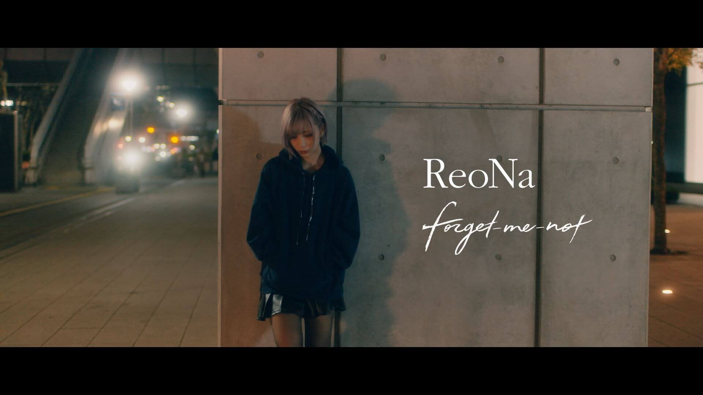
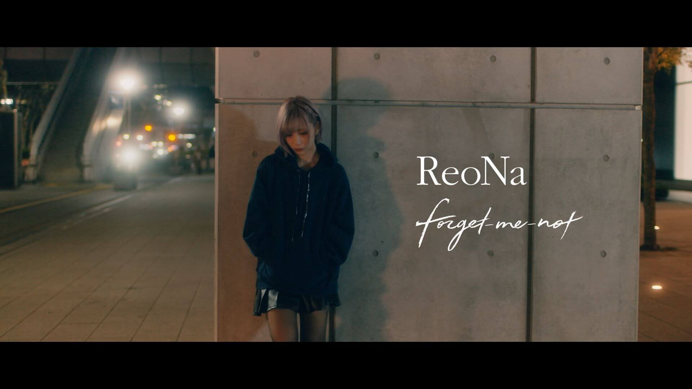

SENA KAJIWARA
 

音楽を聴くことが好きです。特にRADWIMPSをよく聴きます。
ライブにも何回か行った事があります。
一番好きな曲は「ふたりごと」です。
暇な時はアニメを見ていることが多いです。
一番心に残ってるアニメはグリッドマンというアニメです。
今映画もやっていて、素晴らし過ぎて2回観に行きました。

半年ほど前から「OVERWATCH」というFPSゲームにドハマりしてしまいました。
FPSは食わず嫌いでやっていなかったのですが、これは面白いです。
ですが、チームゲームなので面白くないときはとことん面白くないです。